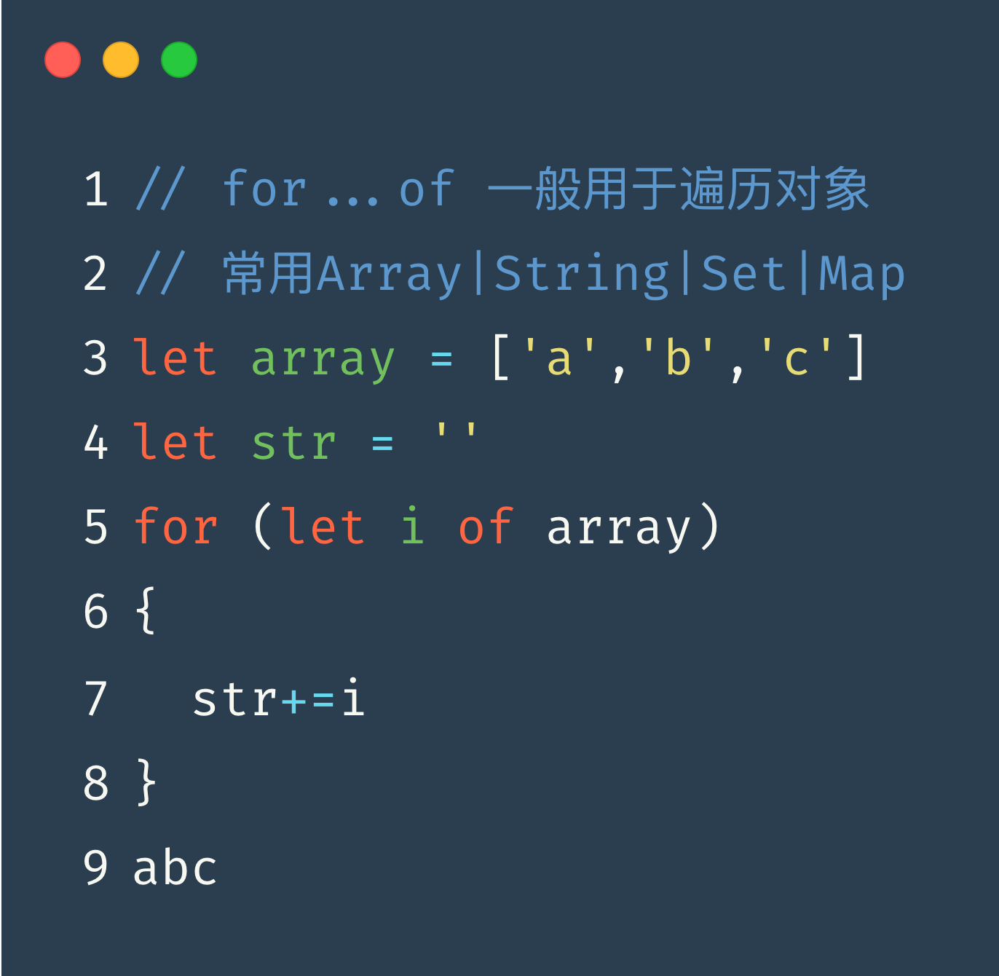

for...in,for...of
// for...in的基本用法
let obj = {a:1,b:2,c:3}
let str = ''
for (let i in obj)
{ str+=i }
abc

// for...of的基本用法
let array = ['a','b','c']
let str = ''
for (let i of array)
{ str+=i }
abc